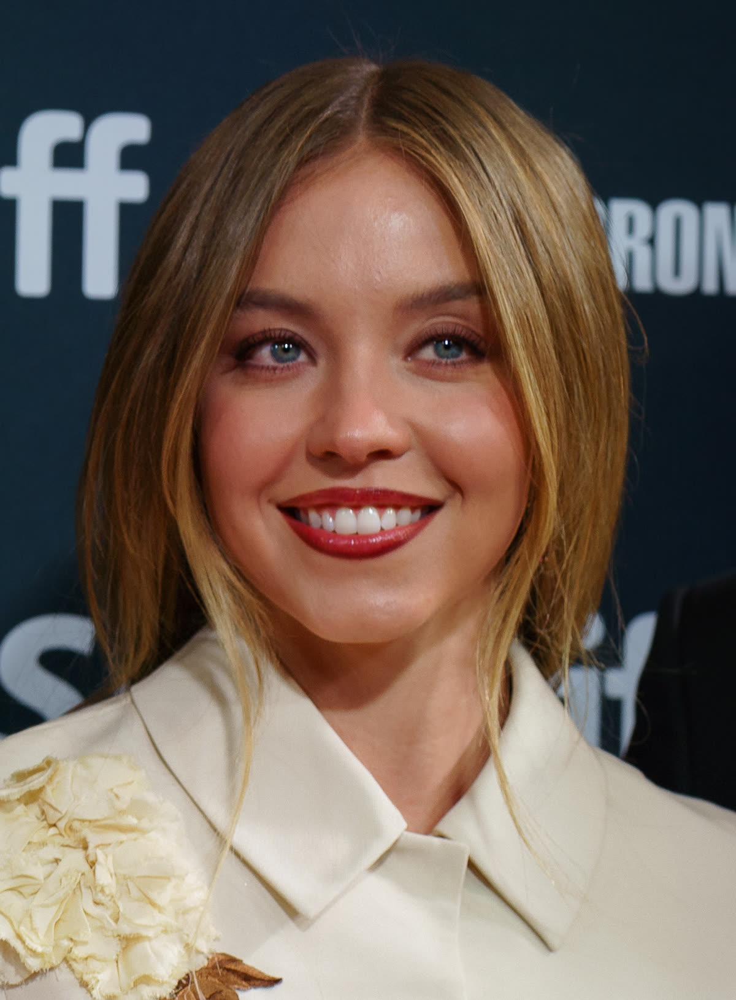

Latest news › NEWS
Sydney Sweeney Says Nude Scenes Can Degrade Female Actors
Sydney Sweeney reportedly said filming nude scenes can degrade female actors, reviving a double-standard argument she has made before, OK Magazine reported.
By Sweeney Report · October 26, 2026

Sydney Sweeney said that filming nude scenes can degrade female actors, according to OK Magazine. The outlet reported that she discussed the challenges of the job in a new interview. Its headline quoted her as saying that the experience "degrades them," a reference to women in the industry who film such scenes.
What was reported
OK Magazine presented the interview as Sweeney opening up about the difficulties female stars face when a role involves nudity. The outlet's account is the main source for this story. Her full remarks and the exact context in which she made them could not be independently verified, so readers may want to check the original interview for the complete picture.
A double standard she has raised before
The comments were not the first time Sweeney spoke on the subject. In earlier interviews, she described what she sees as a double standard in how nude scenes are received. According to those past reports, she said men are often praised for appearing in such scenes, while women are more likely to be judged for the same thing. The new remarks appear to continue that line of argument.
Her Euphoria experience
Sweeney's views on the topic have often been tied to her work on Euphoria. In past interviews about the series, she said she pushed back on some of the scenes written for her character, Cassie. She also said that director Sam Levinson never forced nudity on her. Taken together, those earlier statements show a more nuanced picture: she described having a say in what she did on screen, while also criticizing how the industry and the public treat women who appear nude.
Reaction so far
The source material did not include reactions from other actors, filmmakers or industry groups, and no response from Levinson or the Euphoria team was reported. Opinions on how nude scenes should be handled in film and television vary widely, and any views on the subject belong to the people who express them.
What's next
It was not clear from the report whether Sweeney plans to say more on the subject or whether the interview is tied to a specific project. Check back with the Sweeney Report for updates as more coverage appears. Where do you think the industry should draw the line?
Sources
- OK Magazine — Sydney Sweeney Opens Up About the Challenges of Filming Nude Scenes as a Female Star: 'It Degrades Them'
- Also reported by: Cosmopolitan UK, The Independent
Spotted an error? Email will.jacquier.007@gmail.com and we will correct it.